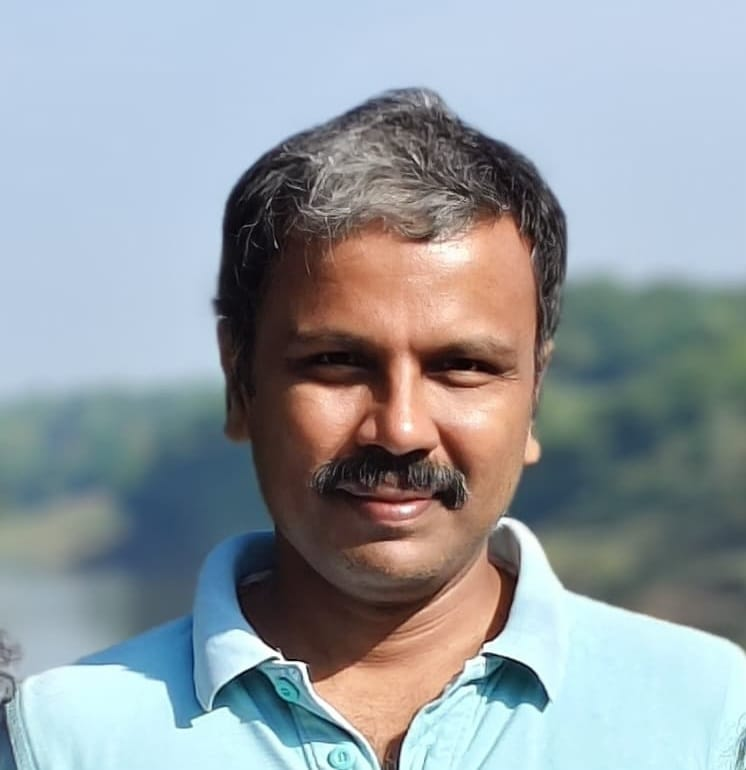

Scientific Officer G ,
Institute for Plasma Research (IPR), India
Associate Professor ,
Homi Bhabha National Institute (HBNI), India
Head, Laser Diagnostics Section
I am affiliated with the Institute for Plasma Research (IPR), Gandhinagar, and the Homi Bhabha National Institute (HBNI), Mumbai, India. My research centers on the development and application of laser-based diagnostic techniques for investigating high-temperature plasmas, plasma–material interactions, and laser-induced plasma phenomena. My current interests include plasma diagnostics, laser–plasma interactions, laser-induced breakdown spectroscopy (LIBS), and supersonic molecular beam studies.
A complete list of publications can be accessed here:
Institute for Plasma Research
Near Indira Bridge
Bhat, Gandhinagar 382428
Gujarat, India